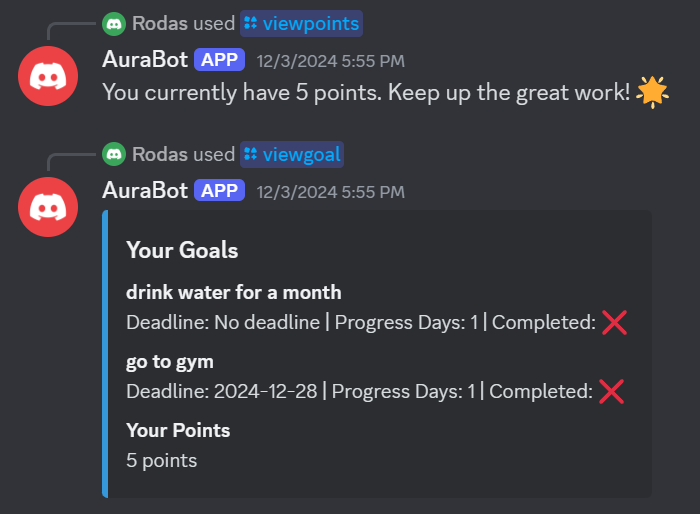

Introduction: What is AuraBot?
Mental health is important, but finding tools to manage it can be a challenge. For people with ADHD and anxiety, tracking moods and building healthy habits can be a lot to think about. Many existing tools are expensive. Some are hard to use, and some don’t respect user privacy. This leaves many people without mental health support. Our project is AuraBot. AuraBot is a free and simple tool on Discord. It helps users track their moods, monitor habits, and see progress over time. By using Discord, a platform millions of people have, AuraBot makes mental health tracking easy to access. Users will no longer need for other apps or pay extra costs.
AuraBot focuses on privacy, simplicity, and inclusivity. It only collects necessary data and keeps it secure, so users feel safe. The bot is designed to be easy to use, with clear commands and customizable reminders. This helps users track habits like drinking water or logging emotions. While it’s especially useful for those with ADHD or anxiety, AuraBot is also for anyone who wants to build healthier habits. Or for those who want to better understand their emotions. With features like mood trend displays, AuraBot gives users helpful details to improve their well-being. Our goal is to provide a supportive, accessible tool that empowers everyone to take control of their mental health.
Project Overview
AuraBot helps users track their mood and visualize trends to improve mental well-being. Below are visualizations of key features:
Showing /menu and /viewgoal

Reminder Notifications

Positive Disability Principles
- Ableist Practices:
- AuraBot avoids ableist assumptions by using neutral and inclusive language that respects users’ diverse experiences.
- The bot does not impose rigid schedules or judgmental prompts, ensuring that users feel supported rather than pressured.
- Our design focuses on empowering users to manage their mental health in a way that works for them, without creating additional stress or barriers.
- Accessibility:
- AuraBot is designed to be accessible for all users by working on Discord, a free and widely used platform.
- Commands are simple and text-based, ensuring compatibility with screen readers and other assistive technologies.
- The bot’s clear and customizable reminders make it easier for individuals with ADHD, anxiety, and other cognitive challenges to use the tool effectively.
- Disability-Led Design:
- Individuals with ADHD and anxiety were involved in the design and testing of AuraBot to ensure the tool met their needs.
- Their feedback directly influenced features like customizable prompts, mood tracking, and streak-based motivation.
- This collaboration ensures that AuraBot is grounded in the lived experiences of the people it aims to support.
- User Agency and Control:
- AuraBot empowers users by allowing them to set and delete reminders, log their moods privately, and customize their experience.
- The bot gives users full control over how they interact with it, supporting their unique mental health goals and preferences.
- By prioritizing flexibility, AuraBot ensures users can manage their mental health without feeling restricted or judged.
- Intersectionality and Inclusivity:
- AuraBot considers the needs of users with overlapping identities, including those who are multiply disabled or come from marginalized backgrounds.
- Its simple, adaptable design makes it a supportive tool for individuals with a variety of cognitive and mental health challenges.
- By fostering an inclusive environment, AuraBot ensures that all users feel welcomed, respected, and valued.
Methodology and Results
What did you do?
As a team, we developed AuraBot, a Discord-based mood logging and habit tracker designed for individuals navigating ADHD and/or anxiety. With accessibility as the key focus, AuraBot helps users manage daily routines and support emotional regulation through its specialized features. ADHD can involve limitations with focus, time management, and remembering tasks, while anxiety may bring about overwhelming stress. These experiences highlight the importance of tools that simplify routine management and encourage self-awareness. AuraBot seeks to fill this gap by offering a free, accessible tool that tracks moods, supports habit formation, and promotes goal visualization. Built-in features like customizable reminders and progress tracking help users to manage their emotional well-being in a structured, yet flexible way, whether it be used publicly or privately. By integrating these features into Discord, AuraBot uses a familiar platform to provide support without the need for downloading additional apps or subscriptions. Ultimately, AuraBot aims to build emotional awareness and proactive mental health management in an inclusive and supportive environment.
Project Design and Development Process
Our team developed AuraBot using Python and the Discord API, focusing on features designed to meet the needs of our target audience. Key functionalities include mood logging, habit tracking, and goal setting, allowing users to document emotions, stressors, sleep duration, and medication intake through simple commands. To promote user agency AuraBot enables customizable entries for these functions, empowering users to tailor the tool to their unique needs and preferences. We used MongoDB for encrypted data storage, ensuring privacy and security. Development was a collaborative effort, with each team member contributing by implementing and testing specific features. Tools like VS Code and GitHub supported efficient development and seamless version control, ensuring high-quality outcomes. These efforts enabled us to implement custom reminders, track progress, and develop visual reporting features that summarize users' mood and habit trends over time. Together, these elements form a cohesive system that is both functional and user-centered.
Key Features and Accessibility Enhancements
Accessibility was central to AuraBot's design, ensuring it meets the diverse needs of its users. Although intended for those with ADHD and/or anxiety, features such as screen-reader compatibility make the bot inclusive for users varying levels of vision. Customizable reminders allow users to set personalized notifications for tasks, medication, routines, or goals, reducing cognitive load and supporting consistency. The visual reporting tools enable users to identify patterns and trends in their mood, habits, and goal progress, helping them gain valuable insights into their emotional well-being. To foster engagement, AuraBot includes a reward system that provides positive reinforcement for consistent use, encouraging users to maintain healthy routines and achieve their goals. These features not only promote personal growth but also create a supportive and user-friendly experience.
Challenges and Problem-Solving Approach
The development of AuraBot presented several challenges, particularly in implementing secure data storage, designing an intuitive user interface, and incorporating effective goal-tracking features. To address these issues, we focused on reducing cognitive load and ensuring ease of use. Multiple testing cycles were conducted to refine the bot's functionality and gather feedback from the team acting as users, ensuring it met the specific needs of individuals with ADHD and anxiety while supporting goal setting and tracking. Collaboration was a key factor in overcoming these challenges, with team members using GitHub to identify and resolve bugs efficiently. One significant hurdle was managing the bot's functionality during development, as we encountered issues with having only one terminal working at a time. If multiple team developers tried to interact with the bot simultaneously, it would crash, complicating both testing and debugging processes. Clear task division allowed us to maintain steady progress and ensure each feature was fully developed and tested. This iterative approach not only improved AuraBot's technical performance but also strengthened its usability.
Learning Outcomes and Technical Growth
Developing AuraBot provided our team with valuable technical and collaborative experience. We gained proficiency in tools like the Discord API, MongoDB, and GitHub, enhancing our ability to build secure, scalable applications. The project deepened our understanding of accessibility principles, particularly those aligned with disability justice, such as centering the leadership of those most impacted. Collaboration was another significant area of growth, as we learned to balance individual contributions with collective goals while addressing technical limitations. These experiences have not only strengthened our technical skills but also gave us the tools to create meaningful and impactful projects in the future.
Results and Impact
AuraBot provides a structured, engaging platform for logging moods, tracking habits, and receiving personalized reminders. Feedback from initial testing has been mixed, but mostly positive, with users highlighting the reward system being particularly impactful as shown below. These tools empower users to engage consistently and make meaningful progress toward their goals. AuraBot's success demonstrates how thoughtful design and accessible technology can promote emotional awareness and well-being. As we continue to refine and expand its features, AuraBot will remain a valuable resource for individuals navigating ADHD and anxiety, empowering them to manage their routines, build self-awareness, and achieve their goals in a supportive environment.
AuraBot reward system
Disability Justice Analysis
- Leadership of Those Most Impacted:
- We understand the challenges of ADHD and anxiety, so we created AuraBot to help users organize feelings, habits, and reminders in a supportive and accessible way.
- We prioritized features like customizable reminders and private mood tracking based on our understanding of what works best for users.
- By centering our experiences, we created a tool that empowers others through meaningful and relatable features.
- Intersectionality:
- AuraBot recognizes that mental health challenges like ADHD and anxiety often overlap with other identities, such as race, gender, and class.
- By using Discord, a free and accessible platform, AuraBot supports individuals from underserved communities who may face additional barriers to accessing mental health tools.
- Its neutral and inclusive language creates a space where all users, regardless of their intersecting identities, feel respected and supported.
- Anti-capitalism:
- AuraBot provides a free tool, eliminating financial pressures often associated with mental health resources. (If it's FREE, it's for ME!)
- Many existing tools require expensive subscriptions, making them inaccessible to individuals with limited financial resources.
- By removing monetization pressures, AuraBot ensures mental health support is available to everyone, not just those who can afford it.
Learnings and Future Work
We gained valuable insights during the development of AuraBot, particularly about the importance of accessibility, user-centered design, and customization. Here are the key takeaways:
- Accessibility matters from the start: Designing with accessibility in mind ensured AuraBot could be used by a diverse range of people, including those with visual and cognitive disabilities.
- User feedback is essential: Testing and iterating based on real user experiences helped refine features like customizable reminders and mood tracking.
- Customization empowers users: Offering flexible features allows users to tailor the bot to their unique needs, ensuring a more personalized and effective experience.
- Simple design is effective: Streamlined commands and a clear interface made the bot intuitive and reduced barriers to use.
Looking ahead, we plan to enhance AuraBot with additional features to make it even more helpful and inclusive. Future improvements could include:
- Multilingual support: Expanding language options to reach a global audience.
- Advanced data visualizations: Allowing users to track mood trends over time and gain deeper insights into their mental health.
- Platform integrations: Connecting AuraBot with external tools like calendars or habit-tracking apps to enhance functionality.
- Voice commands: Adding speech-based interactions to improve accessibility for users with diverse abilities.
- Enhanced customization: Collecting user input to improve features and ensure AuraBot continues to adapt to diverse user needs!
If you have any concerns, suggestions, or feedback about AuraBot, feel free to email m2wangsa@gmail.com. Your input is invaluable for improving the bot and shaping its future updates!